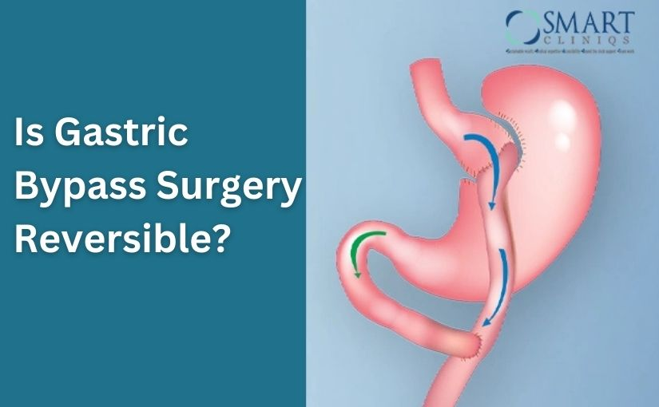

Obesity is one of the leading health challenges in today’s world, and for many people, dieting and exercise alone are not enough to achieve lasting weight loss. In such cases, bariatric surgery becomes a life-changing option. Among the different types of bariatric procedures, gastric bypass surgery is one of the most common and effective. But many patients ask: “How safe is the gastric bypass surgery?”
The good news is that gastric bypass surgery has been performed successfully worldwide for decades, with thousands of patients benefiting from long-term weight loss and improvement in obesity-related conditions. In cities like Delhi, experienced specialists such as Dr. Atul Peter’s, a leading Bariatric Surgeon in Delhi, have made this surgery much safer with advanced techniques and strict medical standards.
How safe is the Gastric Bypass Surgery?
To understand safety, you first need to know what gastric bypass actually does. This surgery is like reprogramming the body’s digestion.
Book Your Appointment TodayUnderstanding Gastric Bypass Surgery
To understand safety, you first need to know what gastric bypass actually does. This surgery is like reprogramming the body’s digestion. Instead of food traveling the usual long path, it takes a shortcut, leading to fewer calories being absorbed.
Here’s how it works in simple terms:
- The surgeon creates a small pouch at the top of the stomach. This pouch becomes the new “mini-stomach.”
- That pouch is then connected directly to a section of the small intestine.
- As a result, food bypasses most of the stomach and the first part of the intestine.
This means two things happen at once — you feel full with less food, and your body absorbs fewer calories. For someone struggling with obesity, it is like pressing a reset button.
How Safe is the Gastric Bypass Surgery?
Whenever a patient asks, “How safe is the gastric bypass surgery?”, doctors often compare it with other common procedures. Believe it or not, the risks of gastric bypass are almost the same as gallbladder removal or knee replacement surgery. In fact, the mortality rate is less than 0.3% worldwide — a figure much lower than most people expect.
The real reason it’s considered safe today is because of laparoscopic surgery. Instead of making a large cut, surgeons operate using tiny incisions and a camera. This reduces pain, lowers infection risk, and helps patients get back on their feet in days instead of weeks.
Take, for example, a 42-year-old patient in Delhi who had diabetes for 10 years. After undergoing Gastric Bypass Surgery in Delhi, not only did he lose 35 kilos, but his blood sugar levels returned to normal within months. His only regret? That he didn’t do it sooner.
Factors that Influence Safety
Now, while the procedure is safe overall, not every patient walks into surgery with the same level of risk. Safety often depends on a mix of medical conditions, lifestyle factors, and the skill of the surgeon.
For instance, someone with uncontrolled high blood pressure, sleep apnea, and heart disease may face a slightly higher risk compared to a younger, healthier patient. But this doesn’t mean surgery is unsafe — it simply means extra precautions are needed.

Here are some things that matter most:
- Patient’s health profile – Heart, lungs, liver, and diabetes control play a major role.
- Surgeon’s experience – Studies show complication rates are far lower with highly trained surgeons. Choosing experts like Dr. Atul Peter’s makes a huge difference.
- Hospital facilities – Advanced operating theaters, ICU backup, and experienced staff add an extra layer of safety.
- Patient discipline – Surgery is only step one. Following the right diet, exercise, and medication plan afterward is what ensures long-term safety.
Think of it like driving a car: the car itself may be safe, but the driver’s skill and how carefully you follow the rules matter too. In bariatric surgery, the “driver” is the surgeon, and the “rules” are the lifestyle changes you commit to.
Short-Term Risks and Complications
No surgery comes without risks, and gastric bypass is no exception. But the key thing to remember is that most of the complications are short-term and manageable when the surgery is done in a reputable center.
Some patients may experience:
- Mild pain or discomfort – Common in the first few days, usually controlled with medicines.
- Nausea or vomiting – The stomach needs time to adjust to its new size.
- Infection at incision sites – Rare, but possible if stitches are not cared for properly.
- Bleeding or leakage – Very uncommon, but surgeons keep a close watch in the first 24–48 hours.
Think of these as the body’s natural response to a big change. With modern laparoscopic methods and constant monitoring, these issues are handled before they become serious. In fact, most patients undergoing Gastric Bypass Surgery in Delhi walk out of the hospital in 3–5 days with minimal discomfort.
Long-Term Safety and Benefits
Here’s where gastric bypass truly shines. While the short-term risks are minor, the long-term benefits are life-changing. For many patients, the surgery not only reduces weight but also gives them a second chance at life.
Benefits over time include:
- Sustainable weight loss – Most people lose 60–80% of excess weight within two years.
- Better control of diabetes – Many stop insulin or tablets within months.
- Reduced heart risk – Blood pressure and cholesterol levels improve.
- Relief from joint pain – Less body weight means easier mobility.
- Better sleep and breathing – Sleep apnea often disappears.
- Boost in confidence and energy – Patients report a more active and fulfilling lifestyle.
To put it simply, the safety of gastric bypass should not only be measured in terms of surgical risks, but also in the years of healthy life gained afterward.
Who is an Ideal Candidate for Gastric Bypass Surgery?
Not everyone struggling with weight is advised to undergo gastric bypass. Doctors carefully evaluate each patient before recommending the surgery. The question isn’t just “how safe is the gastric bypass surgery”, but also “is this the right surgery for me?”

Ideal candidates often include:
- People with a BMI over 40 (severe obesity).
- People with a BMI over 35, plus health conditions like diabetes, hypertension, or sleep apnea.
- Patients who tried diet, exercise, and medicines without lasting results.
- Individuals are motivated to follow a lifelong diet and exercise plan after surgery.
For example, a 36-year-old woman weighing 125 kg with uncontrolled diabetes may benefit greatly, while a 25-year-old with just mild weight gain may be advised against it.
How to Ensure a Safe Recovery After Surgery?
Surgery is only the first step. The true success of gastric bypass lies in how carefully patients follow recovery guidelines. A safe recovery doesn’t just depend on the surgeon — it also depends on the patient’s lifestyle choices.
Ways to ensure safe recovery:
- Follow the diet plan – Start with liquids, then soft foods, and gradually move to solids.
- Stay active – Light walking speeds up recovery and prevents blood clots.
- Take prescribed supplements – Vitamins and minerals are essential since absorption is reduced.
- Protect the incision site – Keep it clean and dry to avoid infection.
- Attend follow-up visits – Regular checkups with your surgeon help track progress and catch any issues early.
Do’s and Don’ts After Gastric Bypass Surgery
Adjusting your lifestyle after surgery is just as important as the operation itself. Patients often ask not just “how safe is the gastric bypass surgery?” but also “what should I do afterward to stay safe?”
| ? Do’s After Gastric Bypass Surgery | ? Don’ts After Gastric Bypass Surgery |
|---|---|
| Eat small, frequent meals instead of large portions. | Don’t consume carbonated or sugary drinks. |
| Drink plenty of water slowly throughout the day. | Don’t lift heavy objects in the first few weeks. |
| Take multivitamins and supplements as prescribed. | Don’t skip follow-up appointments with your surgeon. |
| Exercise regularly, starting with light walking. | Don’t smoke or drink alcohol as they delay healing. |
| Listen to your body and stop eating once you feel full. | Don’t rush into solid foods too early — allow healing time. |
Final Thoughts
When patients ask “how safe is the gastric bypass surgery?”, the answer is not a simple yes or no — it’s about balance. Like any operation, there are risks. But when compared to the dangers of untreated obesity — diabetes, heart disease, high blood pressure, and reduced lifespan — the surgery is often the safer choice in the long run.
In fact, most patients experience dramatic improvements in health, mobility, and confidence. The key lies in choosing the right surgeon and following post-surgery instructions. For those considering Gastric Bypass Surgery in Delhi, experts like Dr. Atul Peter’s provide not only surgical expertise but also long-term guidance to ensure safety and results.